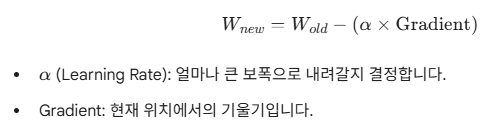

다음 python 소스를 keras를 사용해 구현해 본다.파이썬으로 선형회귀 SGD 구현import numpy as np
# 가상 데이터 (y = 2x + 1 관계) x = np.array([1, 2, 3, 4]) y = np.array([3, 5, 7, 9]) rate = 0.01 w = 1.0 b = 1.0 for epoch in range(1000): for x_i, y_i in zip(x, y): # 1. 순전파 (Forward): 예측값 계산 y_hat = x_i * w + b # 2. 오차 계산 err = y_hat - y_i # 3. 역전파 & 업데이트 (Backward & Update) w = w - rate * err * x_i b = b - rate * err if epoch % 200 == 0: print(f"Epoch {epoch}: w={w:.3f}, b={b:.3f}") print(f"\n최종 결과: y = {w:.2f}x + {b:.2f}") Keras로 선형회귀 SGD 구현import numpy as np
from tensorflow.keras.models import Sequential from tensorflow.keras.layers import Dense from tensorflow.keras.optimizers import SGD # 1. 데이터 준비 x = np.array([1, 2, 3, 4]) y = np.array([3, 5, 7, 9]) # 2. 모델 구성 model = Sequential() # 출력(y)은 1개, 입력(x)도 1개인 선형 레이어 추가 model.add(Dense(1, input_dim=1, activation='linear')) # 3. 컴파일 (학습 방식 설정) # optimizer는 경사하강법, 손실 함수는 평균 제곱 오차(mse) model.compile(optimizer=SGD(learning_rate=0.01), loss='mse') # 4. 학습 # verbose=0은 학습 과정 로그 출력 생략 model.fit(x, y, epochs=1000, verbose=0) # 5. 결과 확인 w = model.weights[0].numpy()[0,0] b = model.weights[1].numpy()[0] print(f"최종 결과: y = {w:.2f}x + {b:.2f}") # 6. 예측해보기 print(f"x=5일 때 예측값: {model.predict(np.array([5]))[0][0]:.2f}") 최종 결과: y = 2.01x + 0.98 1/1 ━━━━━━━━━━━━━━━━━━━━ 0s 118ms/step x=5일 때 예측값: 11.01 Dense(1, input_dim=1, activation='linear') 설명: 첫번째 파라메터는 출력 갯수이다. 옵티마이저(Optimizer)란?딥러닝에서 **옵티마이저(Optimizer)**는 모델이 예측한 값과 실제 정답 사이의 차이인 손실 함수(Loss Function)의 값을 최소화하기 위해 가중치(W)와 편향(b)을 업데이트하는 알고리즘입니다.쉽게 비유하자면, 산의 정상(오차가 가장 큰 상태)에서 안개가 낀 골짜기(오차가 가장 작은 최저점)를 향해 가장 빠르고 안전하게 내려가는 방법을 결정하는 가이드와 같습니다. 옵티마이저의 핵심 원리: 경사 하강법 (Gradient Descent)대부분의 옵티마이저는 경사 하강법에 기반한다. 현재 위치에서 경사(미분값)가 가장 가파른 아래 방향으로 조금씩 이동하는 방식이다. |